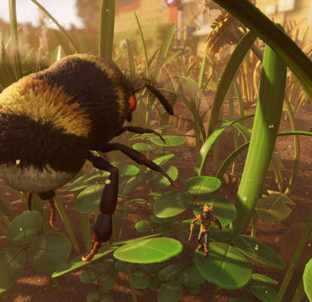

It is available on PC, Xbox, and Playstation.
The reason why I am interested in Grounded is because of all the things you could do in the game and how good the story is. You basically start off as a shruken teenager (as small as a ant) in someones backyard and you have to basically find a way to return to your original size.
You can choose from 4 teenagers, Pete, Willow, Max and Hoops.
There are all kind of mechanics that the game has that makes the game more intereting. There are mutations, milk molars, raw science and a cool fighting system.
For you to survive and not potentially die, you have to go around collect materials such as grass pebbles and whatever you can find to craft your own tools. You have base camps and objectives to do to get back to your original size. You were basically a experiment and now you have to explore the entire backyard to get back to your normal size.
Since you have to explore the entire backyard to get back to your original size you'll eventually ecounter different types of bugs.
>

Now most of these bugs or insects are agressive and would want to kill you on sight, so getting armor would be a good idea and you get armor by killing these bugs. To kill these bugs you have to have weapons which you make from bugs. Now you could use other tools or weapons to kill these bugs for their parts like a pebblet axe that you can make at the start of the game.
There are many types of armor sets and each armor set may give you a buff or effect you could say. Let's say you have a full set of Red Ant armor, the bonus or buff you would get would be all red ants are passive towards you and you get more hauling strength allowing you to carry more grass planks or dry grass planks than you normally would.
Some armor sets are:
Mutations are a in game feature that grants you various buffs or effects to your character. You can unlock various mutations by killing a certain amount of a certain bug or exploring a certain amount of new locations in the backyard to even finding a four leave clover. These mutations help progress the game much easier and much faster.
Milk molars are molars. They can be found all around the map and once you break them (with a tier II hammer) to get the milk inside of them you have the option to upgrade your max health, stamina, hunger/thirst drain and the max amount of mutations you can have active at once. These milk molars are ideal to find since the more you explore the backyard, the more health you'll need for stronger bugs and more stamina to run around more and attack more. Also having more mutation options to use will help you have more of a variety to use and experiment with. (Theres also gold milk molars that allow you to upgrade different things).
Raw science can also be found like milk molars but they have a different use. Raw science stacks up like a quantity. If you find small raw science youll get 100. If you find a medium sized one youll get 500, sometimes youll find big ones that give you 1,000.
Now there are also tools and weapons. There are all kinds of tools and these are axes, shovels, and hammers. There are tiers to these tools aswell as how armors have (so do weapon) Now these tools have tiers from I-III.
The very first tools you would make would be a pebblet axe, pebblet hammer and a acorn shovel. These are the lowest tier (I) so they would typically be the worse. Though eventually after defeating stronger bugs you would be able to make the higher tier toold which would help you get resources faster.
pic pic pic
The weapons also have tiers and there are more weapon types for the different classes. There are swords, greatswords, daggers clubs, staffs, spears, bows, shields, and even your own fists.
On top of there being a variety of weapon choices you can use for the class you would prefer such as mage rouge swordmaster and etc, there are also effects that your weapons or even toold may do and deal to bugs.
These bugs that are inflicted with these effects could be resistant or weak to them. This could allow you to eihter do less or more damage. You are able to stack certian effects such as criticals, venom, poison, slowness and etc depending on what gear, weapon, and mutations you are using.
Some weapons are:
Moving on to the combat system, its pretty basic yet it requires skill. Each bug has their own attack pattern and you must learn to be able to parry it. Parrying a bugs attack will make you take no damage and it opens a window for you to attack back. Eventually if you keep parrying you could stun the bug for a short period of time leaving them prone to your attacks.
There are also bosses in this game, 6 of the infact. Obviously these are still bugs, but although they are bugs they are insanely difficult to beat. One of these bosses is called the Hedge Broodmother. For you to encounter this boss you would need to prepare its favorite meal making it come out of it hiding spot to ultimately defeat it. Now it isn't require to defeat these 6 bosses besides the Assistant Manager since he is a part of the storyline, (which I won't go much over to not spoil much) and Director Schmector which isn't nessecarily required, but it does affect the storyline. Just like any other bug these bosseses have weakness you can exploit. As long as you are using a weapon that inflicts an effect that these bosses are weak to it shouldnt be so hard to defeat them.
If you are wondering which armor set, weapons, mutations or even classes are the best for damage it would be up to you to decide that. There are countless of armor sets, weapons, mutations and classes you could choose from, and also the best choices for damage, but it really just depends on your playstyle. Unless you really do want the best damage for your preffered class go on Youtube and look it up.
If you aren't interested in the combat in the game you could also just build. The game also has a building mechanic or feature and you could use all the resources around to build your dream house.
Lets say you have beaten the game completed the entire storyline, build our dream house and beaten every boss. You might be wondering what do I now? Well what you can do is remix. See once you do everything you could possibly do in Grounded you can remix. Infinitely. What remixing does is basically restart the entire story and everything you collected besides your items (weapons, armor, resources, etc) and houses you may have build. Remixing makes the bugs have effects that would make them stronger and after remixing more than once you eventually unlock new weapons and tools for you to use. It also increases how much raw science you get per bubble. This is totally optional if you still want to play and want a little bit more difficulty.